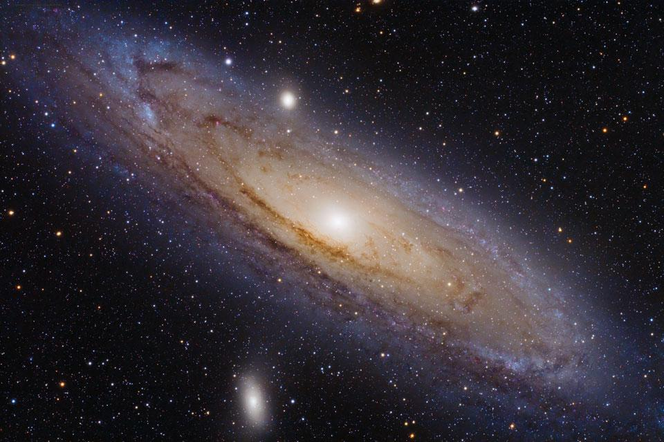
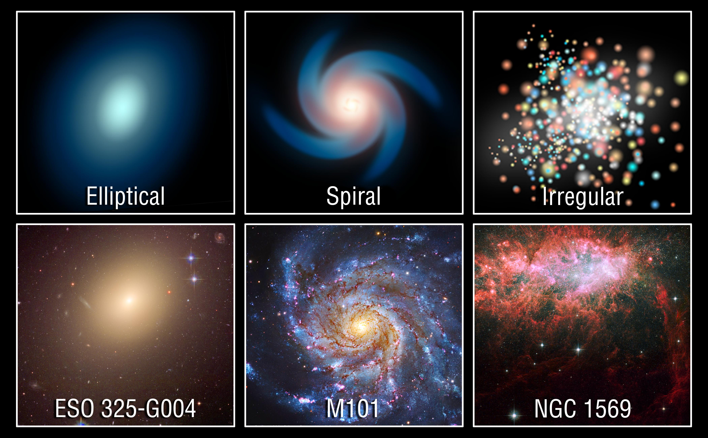

Las galaxias: enormes ciudades de estrellas

¿Qué son las galaxias?
Las galaxias son enormes agrupaciones de estrellas, planetas, gas, polvo cósmico y materia oscura que se mantienen unidas gracias a la fuerza de gravedad. Pueden contener desde millones hasta billones de estrellas.
Se encuentran distribuidas por todo el universo y presentan diferentes tamaños, formas y características. Nuestro planeta pertenece a una galaxia llamada Vía Láctea, que contiene cientos de miles de millones de estrellas.
¿Cómo se forman las galaxias?
Las galaxias comenzaron a formarse hace miles de millones de años, cuando pequeñas concentraciones de materia empezaron a agruparse debido a la gravedad. Con el tiempo, estas agrupaciones crecieron y reunieron grandes cantidades de gas, polvo y estrellas.
A lo largo de su evolución, las galaxias pueden crecer, cambiar de forma e incluso fusionarse con otras. Estos procesos continúan ocurriendo en diferentes regiones del universo.

Tipos de galaxias
Las galaxias se clasifican principalmente según su forma y estructura. Cada tipo presenta características que permiten distinguirlo de los demás.
- Galaxias espirales: tienen un centro brillante y brazos que se extienden formando una estructura similar a una espiral. La Vía Láctea pertenece a este grupo.
- Galaxias espirales barradas: poseen una estructura central alargada en forma de barra, de la cual parten sus brazos espirales.
- Galaxias elípticas: presentan formas redondeadas u ovaladas y contienen principalmente estrellas antiguas. Generalmente tienen poco gas y polvo para formar nuevas estrellas.
- Galaxias lenticulares: tienen una estructura intermedia entre las galaxias espirales y las elípticas. Poseen un disco, pero sus brazos espirales no son evidentes.
- Galaxias irregulares: no presentan una forma definida. Su apariencia puede estar relacionada con interacciones gravitacionales con otras galaxias.
¿Cómo están formadas las galaxias?
Aunque las galaxias pueden tener formas muy diferentes, muchas comparten componentes que cumplen funciones importantes en su estructura y evolución.
Núcleo galáctico
Es la región central de una galaxia. Suele presentar una gran concentración de estrellas y, en muchas galaxias grandes, alberga un agujero negro supermasivo.
Disco galáctico
Es una región aplanada que contiene estrellas, gas y polvo. En las galaxias espirales, los brazos se encuentran dentro de este disco y en ellos se desarrollan procesos de formación estelar.
Halo galáctico
Es una región extensa que rodea las partes principales de algunas galaxias. Contiene estrellas antiguas, cúmulos globulares y una gran cantidad de materia oscura.
Brazos espirales
Son estructuras curvas que se extienden desde la región central de las galaxias espirales. Contienen gas, polvo y numerosas estrellas, incluyendo regiones donde nacen nuevas estrellas.
La Vía Láctea: nuestro hogar galáctico
La Vía Láctea es la galaxia en la que se encuentra nuestro Sistema Solar. Es una galaxia espiral barrada que contiene una enorme cantidad de estrellas, sistemas planetarios, gas y polvo cósmico.
¿Dónde está ubicado el Sistema Solar?
Nuestro Sistema Solar se encuentra en una región del disco galáctico conocida como el brazo de Orión o espolón local, a aproximadamente 26.000 años luz del centro de la Vía Láctea.
El centro de la Vía Láctea
En el centro de nuestra galaxia se encuentra Sagitario A*, un agujero negro supermasivo con una masa de aproximadamente cuatro millones de veces la del Sol.
El movimiento de nuestra galaxia
La Vía Láctea se encuentra en constante movimiento. Sus estrellas orbitan alrededor de su centro y el Sistema Solar tarda aproximadamente entre 225 y 250 millones de años en completar una vuelta alrededor del centro galáctico.
Las galaxias más cercanas a la Vía Láctea
Nuestra galaxia no está sola. Forma parte de un conjunto de galaxias que interactúan gravitacionalmente y que se conoce como el Grupo Local.
Galaxia de Andrómeda
Es una galaxia espiral ubicada aproximadamente a 2,5 millones de años luz de la Tierra. Es la galaxia grande más cercana a la Vía Láctea y se encuentra acercándose a nosotros.
Galaxia del Triángulo
También conocida como Messier 33, es una galaxia espiral situada a aproximadamente 2,7 millones de años luz. Es uno de los miembros más grandes del Grupo Local.
Las Nubes de Magallanes
Son dos galaxias enanas irregulares llamadas Gran Nube de Magallanes y Pequeña Nube de Magallanes. Se encuentran relativamente cerca de la Vía Láctea y pueden observarse desde el hemisferio sur.
Galaxia del Escultor
Es una galaxia espiral situada a unos 11 millones de años luz. Se caracteriza por su actividad de formación de estrellas y por su estructura bien definida.
Algunas galaxias cercanas a la Vía Láctea son:
- Gran Nube de Magallanes: aproximadamente 163.000 años luz.
- Pequeña Nube de Magallanes: aproximadamente 200.000 años luz.
- Galaxia de Andrómeda: aproximadamente 2,5 millones de años luz.
- Galaxia del Triángulo: aproximadamente 2,7 millones de años luz.
El ciclo de vida y evolución de las galaxias
Las galaxias no permanecen iguales durante toda su existencia. A lo largo de miles de millones de años pueden experimentar cambios en su tamaño, forma, composición y cantidad de estrellas.
Formación de nuevas estrellas
En determinadas regiones de las galaxias, las nubes de gas y polvo pueden contraerse por efecto de la gravedad y dar origen a nuevas estrellas. Este proceso se conoce como formación estelar.
Interacciones entre galaxias
Cuando dos galaxias se aproximan, sus fuerzas gravitacionales pueden modificar sus estructuras. Durante estos encuentros pueden formarse nuevas regiones de estrellas y cambiar sus formas originales.
Fusiones galácticas
Algunas galaxias terminan fusionándose con otras. Estos acontecimientos pueden producir galaxias de mayor tamaño y modificar considerablemente su estructura y evolución.
El futuro de las galaxias
Las galaxias continúan evolucionando con el paso del tiempo. Algunas mantienen su actividad de formación estelar, mientras que otras contienen principalmente estrellas antiguas y producen pocas estrellas nuevas.
La relación entre las galaxias y los agujeros negros
Muchas galaxias grandes poseen agujeros negros supermasivos en sus regiones centrales. Estos objetos tienen una masa millones o incluso miles de millones de veces mayor que la del Sol.
¿Qué es un agujero negro supermasivo?
Es una región del espacio donde la gravedad es tan intensa que ni siquiera la luz puede escapar una vez que atraviesa su horizonte de sucesos. Se cree que estos objetos pueden influir en la evolución de sus galaxias.
Los cuásares
Son objetos extremadamente luminosos que se encuentran en algunas galaxias lejanas. Su brillo se produce por la enorme cantidad de energía liberada por el material que cae hacia un agujero negro supermasivo.
La exploración y observación de las galaxias
Los astrónomos utilizan telescopios terrestres y espaciales para estudiar las galaxias. Gracias a estos instrumentos pueden observar su estructura, composición, distancia y evolución.
- Telescopio espacial Hubble: ha permitido observar galaxias muy lejanas, estudiar sus estructuras y descubrir detalles sobre su evolución.
- Telescopio espacial James Webb: permite estudiar galaxias muy antiguas y observar regiones del universo que emiten luz infrarroja.
- Observatorio ALMA: permite estudiar el gas y el polvo presentes en las galaxias, así como las regiones donde nacen nuevas estrellas.
- Telescopio VLT: es un conjunto de telescopios ubicado en Chile que permite realizar observaciones detalladas de diferentes objetos astronómicos.
Estos avances han permitido conocer galaxias situadas a miles de millones de años luz y comprender mejor la historia del universo.
Curiosidades sobre las galaxias
Las galaxias esconden fenómenos sorprendentes que nos ayudan a comprender lo inmenso que es el universo. Estos son algunos datos interesantes que quizás no conocías:
- Vivimos en una galaxia: la Tierra, el Sol y todos los planetas del Sistema Solar forman parte de la Vía Láctea.
- Existen muchísimas galaxias: las observaciones astronómicas indican que el universo observable contiene una enorme cantidad de galaxias.
- Las galaxias pueden chocar: aunque sus estrellas generalmente no colisionan entre sí, la gravedad puede modificar sus formas y provocar fusiones.
- Andrómeda se acerca: esta galaxia se aproxima a la Vía Láctea y, dentro de miles de millones de años, ambas podrían fusionarse.
- No todo es visible: una gran parte de la masa de las galaxias se atribuye a la materia oscura, que no emite luz y se estudia mediante sus efectos gravitacionales.
- Existen galaxias gigantes: algunas galaxias alcanzan tamaños enormes y contienen cantidades extraordinarias de estrellas.
- Mirar lejos es mirar al pasado: la luz de las galaxias distantes tarda millones o miles de millones de años en llegar hasta nosotros.